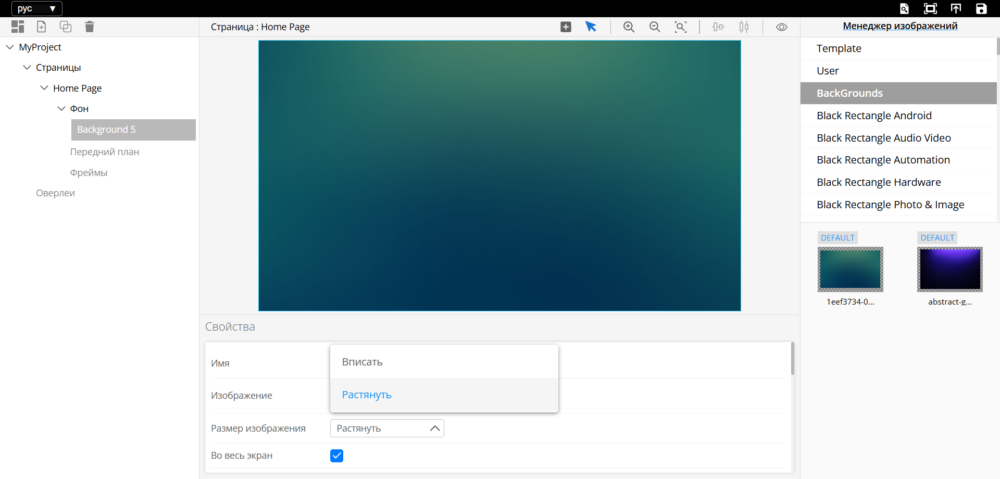

UI-Designer
UI-Designer– это инструмент для создания и настройки пользовательских интерфейсов с помощью drag-and-drop (перетаскивания). Пользователь может управлять структурой интерфейса, настраивая страницы и элементы на страницах, такие как фоны, текст, кнопки, слайдеры, списки, Оверлеи(подстраницы). UI-Designer интерфейсов позволяет легко изменять свойства каждого элемента через панель настроек. Для доступа к UI-Designer введите в браузере IP-Controller:8000
Обзор
UI-Designer служит для создания интерфейсов, для панели управления. Все имена объектов — это их ID, с помощью которых производится управление состоянием этих элементов. При создании каждого элемента интерфейса тщательно продумывайте их имена, это упростит взаимодействие с интерфейсом в U-Logic. Имена объектов могут дублироваться, но в таком случае состояние, отправленное из U-Logic, будет применяться ко всем элементам с одинаковым именем. Не создавайте объекты разных типов с одинаковыми именами. Используйте только английские символы для имен объектов.
Основные элементы:
Дерево интерфейса – служит для навигации по созданным элементам.
Холст – основная рабочая область для создания интерфейсов.
Панель свойств элементов – служит для изменения размеров, положения, стилей и других параметров
Менеджер изображений – загрузка и выбор изображений для использования в интерфейсе.
Верхняя панель

В верхней панели интерфейса расположены следующие элементы управления:
Выбор языка — позволяет переключаться между доступными языками: английским и русским.
Предпросмотр — отключает возможность редактирования интерфейсов, позволяя оценить их финальный вид.
Опубликовать — отправляет внесённые изменения в UI-Panel, делая их доступными для использования.
Сохранить — фиксирует текущие изменения в UI-Designer, обеспечивая их сохранность для дальнейшей работы.
Левая панель

На левой панели расположены следующие кнопки управления элементами интерфейса:
Создать интерфейс
Создать страницу
Создать оверлей
Удалить
Создать интерфейс

При нажатии на кнопку «Создать интерфейс» открывается форма, в которой предлагается:
Ввести название интерфейса
Примечание
Имя интерфейса выступает в роли ID, который используется для взаимодействия с интерфейсом в U-Logic. Рекомендуется использовать латинские символы без пробелов (как для самого интерфейса, так и для всех элементов).
Выбрать соотношение сторон:
4:3
16:9
16:10
Пользовательское (возможность задать произвольные параметры).
Примечание
Примечание: Все указанные свойства можно изменить позже.
Создать страницу
Добавляет новую страницу на выбранном интерфейсе.
Создать оверлей
Добавляет оверлей на выбранном интерфейсе.
Удалить
Удаляет выбранный элемент интерфейса.
Дерево интерфейса
Также на левой панели расположено дерево в котором отображается структура и элементы интерфейса и служит для навигации по элементам интерфейса. Пользовательский интерфейс может содержать страницы и оверлеи, которые могут содержать:
Фон
Передний план
Фреймы
В дереве интерфейсов доступны следующие функции:
Добавление элементов – рядом с типом элемента интерфейса расположен значок «+», нажав на который, можно добавить новую страницу или оверлей.
Скрытие элементов – слева от каждого элемента находится значок «глаза», при нажатии на него элемент скрывается.
Сворачивание и разворачивание разделов – группы элементов в дереве можно сворачивать и разворачивать для удобства навигации.
Центральная панель

Центральная панель содержит:
Холст для редактирования выбранной страницы
Менеджер изображений для выбора изображения из библиотек
Холст
Холст отображает выбранную страницу в дереве проекта и элементы, расположенные на этой странице
В верхней части холста отображается:
Имя выбранной страницы или оверлея
Выбранный инструмент
Также в верхней части холста доступны следующие кнопки:
Создать виджет
Создать Кнопку
Создать Список
Создать Слайдер
Создать Фон
Создать Фрейм
Для создания виджета выделите область на рабочем пространстве
Выделение: Позволяет выбрать один или несколько элементов интерфейса для редактирования.
Приблизить: Увеличивает масштаб рабочей области.
Отдалить: Уменьшает масштаб рабочей области.
Исходный масштаб: Сбрасывает масштабирование к стандартному значению.
Инструменты выравнивания: Автоматически выравнивает выбранные элементы в зависимости от выбранной опции.
Центрировать по горизонтали
Центрировать по вертикали
Выровнять по левому краю
Выровнять по правому краю
Выровнять по верхнему краю
Выровнять по нижнему краю
Интсрументы распределения: Распределяет выбранные элементы в зависимости от выбранной опции.
Распределить по горизонтали
Распределить по вертикали
Интервал: Задать интервал между элементами для распределения
Группировать элементы: Объединяет несколько выбранных элементов в одну группу.
Разгруппировать элементы: Отменяет группировку.
Показывать имена элементов: Отображает имена элементов на рабочей области.
Рабочее пространство - это рабочая зона UI-Designer для размещения элементов
Менеджер изображений
Левая часть менеджера изображений представляет из себя список библиотек, содержащих изображения. В правой части отображается содержимое выбранной библиотеки.
При нажатии на «Менеджер изображений» появится следующее меню:

Холст для редактирования выбранной страницы
Свойства для редактирования свойств выбранного элемента
Панель инструментов для создания элементов и работы с холстом
Холст отображает выбранную страницу в дереве проекта и элементы, расположенные на этой странице
Панель Свойств предоставляет возможность редактировать определенные параметры элементов интерфейса, такие как имена интерфейсов, размеры кнопок, шрифт, цвет текста и цвет фона.
Настройки текста
Текст – добавляет текст для идентификации кнопки, страницы или интерфейса.
Шрифт – задает шрифт текста, отображаемого в пользовательском интерфейсе.
Размер шрифта – определяет размер текста. Допустимые значения – от 1 и до бесконечности.
Жирный – применяет полужирное начертание текста.
Цвет фона – задает цвет фона для элемента интерфейса.
Цвет шрифта – открывает палитру для выбора и редактирования цвета текста.
Выравнивание текста – регулирует положение текста внутри элемента интерфейса. Текст можно расположить в одном из следующих положений: верхний левый, верхний средний, верхний правый, центр слева, центр по центру, центр справа, нижний левый, нижний средний или нижний правый.
Параметры положения на странице
X – изменение значения X перемещает элемент по горизонтали страницы (слева направо).
Y – изменение значения Y перемещает элемент по вертикали страницы (сверху вниз).
Параметры размера
Ширина– изменение ширины объекта
Высота– изменение высоты объекта
С их помощью можно отрегулировать Ширину и Высоты (ширину и высоту) элемента интерфейса.
Параметры изображения
Изображение Defalt, Изображение Pressed, Изображение Selected, Изображение Disabled– миниатюры изображения, используемого для кнопки в соответствующих состояниях.
Размер изображения– включает следующие настройки:
Contain – подгоняет изображение под элемент, сохраняя пропорции.
Stretch – растягивает изображение для заполнения области элемента, игнорируя пропорции.
Normal – сохраняет исходные пропорции изображения, независимо от размера элемента.
Параметры границы
Стиль границы включает следующие настройки:
Сплошной
Пунктирный
Точечный
Двойной
Канавка
Гребень
Вдавленный
Выпуклый
Ширина границы – задает размер границы.
Цвет границы – задает цвет границы
Радиус закругления углов – закругляет углы границы
Размер изображения– включает следующие настройки:
Contain – подгоняет изображение под элемент, сохраняя пропорции.
Stretch – растягивает изображение для заполнения области элемента, игнорируя пропорции.
Normal – сохраняет исходные пропорции изображения, независимо от размера элемента.
Параметры слайдера
Ориентация – определяет ориентацию слайдера. Доступные варианты:
Вертикальная – движение от низа к верху, где нижняя часть – минимальное значение, а верхняя – максимальное.
Горизрнтальная – движение слева направо, где левая сторона – минимальное значение, а правая – максимальное.
Шаг – задает количество команд, которые могут быть выполнены с помощью слайдера. Например, для регулятора яркости можно установить 100 шагов (от 0% до 100%).
Отправлять команду после – включает два варианта:
Перетаскивание – отправка команд при перемещении ручки слайдера.
Отпускание – отправка команды после отпускания ручки слайдера.
Цвет ручки – задает цвет ручки слайдера.
Цвет заполненной полоски – определяет цвет заполненной части слайдера, который указывает текущий уровень параметра, контролируемого слайдером.
Цвет пустой полоски – определяет цвет пустой области слайдера над текущим уровнем.
Толщина полоски – задает ширину вертикального слайдера и высоту горизонтального.
Радиус ручки – определяет размер ручки слайдера.
Панель инструментов центральной панели

содержит следующие компоненты:
Изображение |
Описание |
|---|---|
«Создать Виджет» - вызывает выпадающий список с выбором доступных для создания элементов на странице. После выбора элемента из списка курсор переходит в режим «рисования» элементов |
|
|
«Выделить» – выключает режим рисования |
Увеличить– увеличивает масштаб холста |
|
|
Уменьшить– уменьшает масштаб холста |
Масштаб по размеру– исходный масштаб холста |
|
|
Выравние элементов |
|
Задать интервал между элементами |
|
Просмотреть имена элементов |
Правая панель
На правой панели находится - Менеджер изображений, Библиотека изображений, Панель инструментов (правый верхний угол).
Каждое изображение может содержать следующие состояния:
Default (По умолчанию) – отображается на начальном экране пользовательского интерфейса. Это изображение статично на интерфейсе, пока не будет изменено нажатием или другим событием.
Pressed (Нажато) – отображается во время нажатия на кнопку.
Selected (Выбрано) – отображается после отправки соответствующей команды из U-Logic.
Disabled (Отключено) – отображается, когда кнопка больше не активна.
Панель инструментов
Изображение |
Описание |
|---|---|
«Сохранить» -Сохраняет проект, без загрузки на панель |
|
«Опубликовать» – Загружает проект на панель управления |
|
Предпросмотр– Включает отображение Оверлея внутри фрейма |
|
Предпросмотр с дейтсвительными значениями– предпросмотр интерфейса в его действительном масштабе |
Создание интерфейса
При первом запуске UI-Designer для создания интерфейса нажмите кнопку Create Interface
После нажатия, в появившемся окне необходимо настроить разрешение интерфейса в соответствии с разрешением устройства, на котором будет работать интерфейс, например, Сенсорная панель с разрешением экрана 1920x1080. Для этого необходимо выбрать Пользовательское соотношение сторон и задать ширину экрана 1920 и высоту экрана1080. Так же необходимо задать уникальное имя интерфейса. После того как все поля заполнены нажать ОК.
Примечание: Имена всех элементов это ID которые используются в API для взаимодействия с программой управления созданной в визуальной среде прогрпшаммирования, имена должны быть указаны на латинице
Создание страницы
После создания интерфейса появится холст, где можно увидеть структуру страницы и её элементы. Каждая страница должна иметь уникальное имя, которое будет использоваться как ID для взаимодействия с визуальной средой программирования. На странице можно создавать следующие элементы: Фон, Кнопки, Слайдеры, Списки и Фреймы. Каждый элемент и созданная страница отображаются в дереве проекта, где корнем выступает интерфейс. Для добавления новой страницы используйте кнопку Добавить страницу, расположенную в панели над деревом проекта
Создание элементов страницы
Чтобы добавить элемент на страницу, нажмите кнопку «Создать элемент» в панели над холстом. Откроется выпадающий список с типами доступных элементов. Выберите нужный элемент, затем зажмите левую кнопку мыши и выделите область на холсте, где должен появиться выбранный элемент. Элемент будет создан в выбранной области. После создания элемента нажмите клавишу S на клавиатуре, чтобы выйти из режима создания элементов.
Кнопки можно создавать и другим способом — через Менеджер изображений. В Менеджере изображений находятся готовые изображения кнопок, которые можно использовать в проекте. Просто выберите нужное изображение и перетащите его на холст. При этом, если удерживать клавишу Shift, будет создан элемент Background (фон), покрывающий весь холст. Для каждого состояния кнопки можно сменить изображение, для этого нужно выбрать кнопку на холсте и перетащить изображение из «менеджера изображений» в нужное состояние в панели свойств
##Оверлей и Фрейм
Оверлеи — это подстраницы, которые добавляются в основной интерфейс. Они позволяют использовать главный интерфейс для размещения базовых статичных объектов, таких как фон или элементы навигации, а нужный функционал, например, настройки звука, видео или системные параметры, выносить на оверлеи.
Создание Фрейма для Оверлея:
Нажмите на кнопку создания виджета в панели инструментов холста и выберите «Создать Фрейм».
В окне свойств можно настроить размеры и местоположение фрейма, а также указать размеры отображаемого в нём Оверлея.
Создание и настройка Оверлея:
В панели интерфейсов выберите название нужного интерфейса. В панели инструментов дерева, нажмите «Добавить Оверлей». Настройте размеры оверлея в окне свойств. Размер оверлея должен соответствовать размеру фрейма, в котором он будет отображаться.
Один и тот же оверлей может быть показан в разных фреймах на любых страницах.
Сохранение и публикация проекта
После того как дизайн интерфейса готов, интерфейс можно загрузить на панель управления. Для этого сначала необходимо сохранить проект нажав на кнопку Сохранить на панели интсрументов над менеджером изображений, затем нажать кнопку Опубликовать
для отправки проекта на панель
Создание интерфейса
Добавление интерфейса
Откройте UI-Designer.
Создайте новый интерфейс:
Нажмите кнопку «Создать интерфейс».

Нажмите на кнопку «Пользовательское соотношение сторон».
В левом углу укажите имя интерфейса.
Задайте разрешение интерфейса. Разрешение должно соответствовать экрану панели, на которой будет использоваться интерфейс.
Подтвердите создание интерфейса:
Нажмите кнопку «Ок». После этого появится интерфейс с одной страницей.

Примечание
Имя интерфейса выступает в роли ID, который используется для взаимодействия с интерфейсом в U-Logic. Рекомендуется использовать латинские символы без пробелов (как для самого интерфейса, так и для всех элементов).
Добавление изображений и кнопок
Задний фон страницы:
Выберите нужное изображение из библиотеки изображений.

Зажмите ЛКМ + SHIFT и перетащите изображение на холст.
В панели свойств в параметре «Размер изображения» выберите значение «Растянуть».

Добавление кнопки:
Выберите нужное изображение из библиотеки изображений
Нажмите и удерживайте ЛКМ, затем перетащите изображение на холст.
В панели свойств задайте имя кнопки, текст и другие необходимые параметры.


Примечание
Имена всех объектов это их ID, используются при взаимодействии U-Logic с интерфейсом.
Создание текстового объекта
Нажмите на кнопку «Создать виджет» на панели инструментов над холстом.

В появившемся меню выберите «Создать кнопку».
Наведите курсор на холст, зажмите ЛКМ и потяните курсор, чтобы указать область расположения и размеры кнопки.

Отпустите ЛКМ и нажмите клавишу F для выхода из режима рисования.
В панели свойств задайте текст и размер шрифта.

Для создания второго текстового поля (в котором в дальнейшем будет меняться текст в зависимости от сценариев программы в U-Logic), наведите курсор на уже созданный объект.
Зажмите ЛКМ + CTRL или CTRL + С и перетащите объект в нужное место.
Измените или удалите текст и задайте новое имя объекта.

Добавьте дополнительные кнопки:
Для каждой кнопки задайте уникальное имя.Сохранение и публикация проекта:
Сохраните результат.
Опубликуйте проект.
 9. Настройка интерфейса в U-Logic:
- Откройте U-Logic и настройте узлы UI-Panel для запуска созданного интерфейса.
- Откройте UI-Panel для работы с загруженным интерфейсом по адресу
9. Настройка интерфейса в U-Logic:
- Откройте U-Logic и настройте узлы UI-Panel для запуска созданного интерфейса.
- Откройте UI-Panel для работы с загруженным интерфейсом по адресу IP-Controller:5001.
Фреймы и оверлеи (Подстраницы)
Оверлеи – это подстраницы или всплывающие страницы, позволяющие организовать многоуровневую структуру интерфейса без необходимости создавать множество отдельных страниц. Вместо этого используется единая основная страница с глобальными элементами управления, а оверлеи (подстраницы) накладываются на неё.
Фрейм – это контейнер, в котором отображаются оверлеи. Он обеспечивает динамическое изменение содержимого без создания новых страниц, что позволяет избежать дублирования элементов и упрощает навигацию.
Назначение фрейма:
Определяет область, в которой будет размещаться оверлей.
Позволяет уменьшить количество страниц за счёт добавления дополнительных слоёв интерфейса.
Может находиться внутри оверлеев, что даёт возможность создавать сложные иерархические интерфейсы.
Позволяет изменять содержимое динамически, без смены основной страницы.
Создание фрейма и оверлея
Создание фрейма:
Выберите нужную страницу в дереве интерфейсов (левая часть UI-Designer).
Нажмите кнопку «Создать элемент интерфейса» на панели инструментов.
Выберите «Создать фрейм».

На холсте зажмите ЛКМ и перетащите курсор, чтобы создать фрейм.
Нажмите клавишу F для выхода из режима рисования.
Отредактируйте размер и положение фрейма в панели свойств и задайте имя фрейма.

Создание и настройка оверлея:
Выберите нужный интерфейс (если их несколько), оверлеи создаются отдельно для каждого интерфейса.
На панели инструментов над деревом проекта нажмите кнопку «Добавить оверлей».

Новый оверлей появится в списке оверлеев выбранного интерфейса.
В окне свойств настройте размер оверлея, который должен соответствовать размеру фрейма.

Создание объектов в оверлее
Примечание
Создание объектов для Оверлея ни чем не отличается от создания объектов для страницы.
Создание слайдера:
На панели инструментов над холстом нажмите кнопку «Создать виджет».

В выпадающем меню выберите «Создать слайдер».
Наведите курсор на холст, зажмите ЛКМ и выделите область, где должен располагаться слайдер.
Для выхода из режима рисования нажмите клавишу F.
В панели свойств задайте имя слайдера.

Создание дополнительных кнопок:
Создайте кнопки для увеличения/уменьшения громкости и для включения/выключения звука.
Задайте уникальные имена для каждого объекта.

Примечание
Чтобы оверлей (подстраница) был прозрачным, не добавляйте для него фон.
Просмотр результата:
Для предварительного просмотра нажмите на нужную страницу в дереве интерфейсов (левая часть UI-Designer).
Выберите фрейм на холсте или в дереве интерфейсов и в панели свойств выберите нужный overlay из списка.

Нажмите на кнопку «Предпросмотр» (или нажмите клавишу 1) для просмотра оверлея на странице.

Для выхода из режима предпросмотра также нажмите клавишу 1.
Примечание
В режиме предпросмотра редактирование интерфейса невозможно. Выключите этот режим для внесения изменений.
Копирование оверлеев:
Скопируйте созданный оверлей и измените имена оверлеев и элементов внутри них при необходимости.
Примечание
Если в настройках фрейма в разделе «Отображение оверлея» выбран конкретный оверлей, он будет отображаться по умолчанию при первом запуске интерфейса. Чтобы фрейм оставался пустым по умолчанию, выберите опцию «Нет оверлея».
Завершение работы:
Сохраните и опубликуйте проект.
Откройте U-Logic для настройки поведения интерфейса.
Запустите UI-Panel для работы с обновлённым интерфейсом.